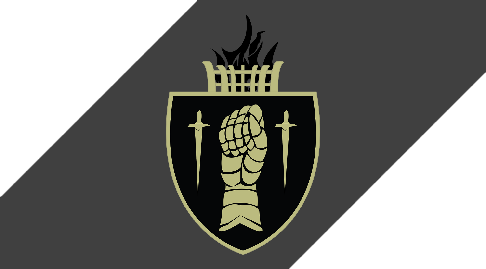

About the Order
The Sovereign Order is presented as a knightly company devoted to discipline, protection, and service. This page explains the purpose of the site and the design choices used throughout the project.

The Sovereign Order
Knightly services, quest records, and guild resources
The Sovereign Order is presented as a knightly company devoted to discipline, protection, and service. This page explains the purpose of the site and the design choices used throughout the project.